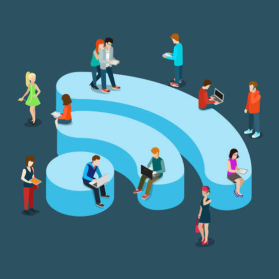

Public Wi-Fi risks
Public Wi-Fi is convenient, but we do not always know who controls the network. Fake login and networks can put private information at risk.

Public Wi-Fi networks can expose users to fake hotspots and other security threats.
Main risks
- Man-in-the-middle: Someone intercepts commmunication.
- Evil twin: A fake Wi-Fi hotspot with a believable name.
- Fake login pages: Pages asking for your email password.
- HTTP traffic: Unencrypted information can occur.
Safer vs Riskier
| Safer | Riskier |
|---|---|
| HTTPS websites | Passwords on HTTP pages |
| E2EE messaging apps | Ignoring browser warnings |
| Verified networks | Unknown hotspot |
| Mobile data for banking | Giving email passwords to access Wi-Fi |
Real-world example: Australia, 2024
Australian police charged a man accused of creating a fake Wi-Fi networks at airports and on flights to collect people's login credentials.
Useful tips
- Never give your email password to access Wi-FI.
- Use mobile data for sensitive activities.
- Turn off automatic connection to unknown networks.
Source: EFF, Why Public Wi-Fi is a Lot Safer Than You Think. Australian Federal Police